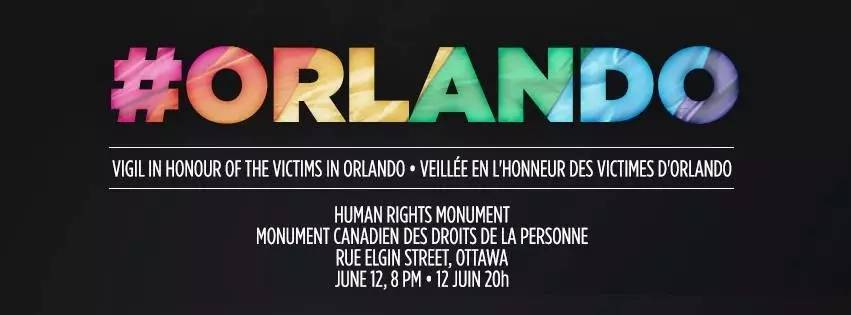
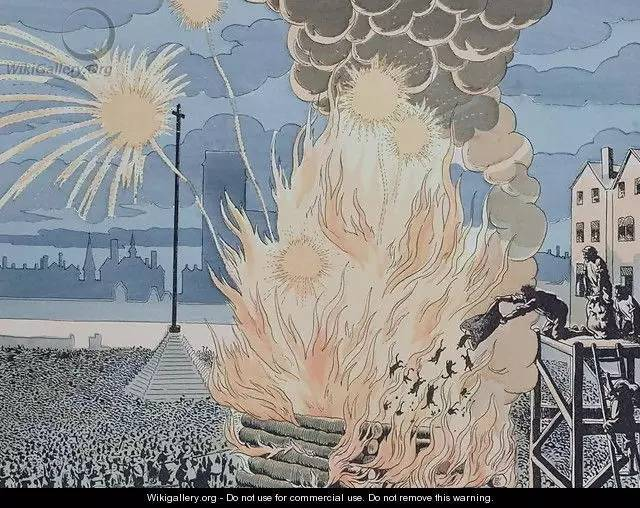

某个特定的切面上，人人都是少数派
Contents

6月12日，也就是昨天，美国佛罗里达州奥兰多发生了美国历史上最大规模的枪击案，总共50人死亡，53人受伤。对于美国这很可能是一次如同911一般严重的恐怖袭击，甚至可能是一次转折点。本来我以为会和半年前的法国巴黎恐怖袭击一样，有无数人写文章谈及此事。但之后奇怪的事情发生了，这么严重的事件在中国新闻网站上竟然上不了头条，而且一天之后，关于这件事已经被新闻网站们挪到了不起眼的位置，而且目标竟然转移到美国应该不应该禁枪上，平时忙着抢流量找热点的自媒体更是鸦雀无声。和菜头在他的收费订阅号上写了唯一一篇我认为三观正常的文章，他在文中也提到了，这是他上网这么多年来见过最诡异的事件。这和我的感受完全相同。
经过很多朋友的提醒和各种分析，原因应该归结于受害者都是同性恋群体。因为对比同样牵扯极端穆斯林势力的巴黎恐怖袭击，中国互联网四处充满了“今夜我们都是巴黎人”，但是这一次并没有“今夜我们都是奥兰多人”，这显然不该归结于宗教原因导致的缄默。
我一直认为中国社会发展的相当快，除了一些众所周知的禁区，其他方面相当开放，对于LGBT群体的态度也是合法化国家之外最友好的一个，但这一次的事件彻底打破了我这种印象。尤其是看到各种中文新闻和微博评论中赤裸裸对同性恋群体的仇视和幸灾乐祸，实在是令人难以接受。
我不是LGBT群体中的一员，但我一直把一个社会对于LGBT群体的态度做为文明的试金石之一，因为这种态度的本质是人们如何对待那些和自己不同的人，是否可以在对自己无害的情况下接受别人与自己不同的生活方式。是的，很多科学研究说明LGBT是先天生理原因造成的，但这不重要，无论是不是先天的，最终表现出来的结果就是有一些人选择了不同的生活方式。从这个角度看，同性恋和异性恋毫无区别，同样，这和有人选择不结婚，有人选择不要孩子，有人选择不上大学，有人选择做不赚钱的事，有人养猫，有人养狗，有人出国有人生活在北上广深有人回到家乡之类的事情一样，都是纯粹个人的事，和别人没有关系。而现代社会文明的一个基本底线就是尊重别人不同的选择。我们每一个人都会做出一些和别人不一样的选择，在某一个特定的切面上，人人都有可能成为少数派，最终都有可能成为受害者，如果你觉得这个太夸张的话，豆瓣有一个小组叫做《父母皆祸害》，充分展示了以家庭传统为名干涉孩子选择的结果。
一只黑猫和一只黄猫有什么区别吗？今天大部分人显然会回答没有区别。但在中世纪区别就大了，黑猫就理所应当被活活烧死，人们还围着被烧得嗷嗷惨叫的猫跳舞唱歌庆祝，原因仅仅是因为一些宗教领袖把黑猫定义为魔鬼的宠物，人们就把大批的猫扔到火里面烧死，还做为庆典。今天的人恐怕想都不愿意想这么残忍的情景，但在那个时代，这竟然是正义而快乐的事。对LGBT的歧视，简直就是现代版的烧猫庆典，人们就这么漠视奥兰多的血流成河。

图1：法国人曾经就是这么烧猫的
这几天英文新闻里面常见的一个说法是：Love is love is love is love is love is love is love is love is love（就这么长，可以任意重复写多少次），这本来就是这个彩虹月的主题，意思是爱和爱之间并没有什么不同，爱情可以产生在任何性别组合之间，它们都是一样的，爱就是爱。在奥兰多枪击案之后，这句话成了成为对LGBT群体的支持。长期以来，很多人对彩虹月的自豪大游行颇有微词，觉得过于高调，过于政治正确了。但这一次事件恰恰说明了，LGBT群体仍然是最容易遭受迫害的群体，哪怕是在美国仍然如此。中国互联网上对此的缄默无声，说明了同样的问题，他们甚至在被残酷杀害之后都得不到社会应有的纪念，这显然是不应该的，爱就是爱，生命就是生命。
我没有特别指某一种宗教，这倒不是因为担心被报复，而是因为歧视并不仅仅由极端保守派宗教势力产生。歧视广泛存在在人群之中，只是以“这样对你好”，或者以“圣训如此”的名义去干涉别人的时候，往往更显得心安理得。在今天，信息已经如此发达的时代，稍微花一些时间就可以轻松了解那些和自己不同的人群如何生活和他们的想法，如果能放下各种束缚，单从人性的角度去考虑问题，相信也不难得出“他们和我们并无区别”这个结论。遗憾的是很多人并不愿意这么做。
最终杀死人的确实是枪，但驱动枪的力量，是仇恨，对于少数群体的仇恨通常来源于歧视。避免歧视并不仅仅是为了特定的少数群体（比如LGBT），还是回到中世纪，开始他们歧视黑猫，只烧黑猫，但慢慢的，歧视开始转向猫，什么猫都烧，再然后，养猫的女人就容易被怀疑是女巫，一起烧死。等猫被杀光之后，老鼠开始泛滥，鼠疫来了，这一次，大规模无差别死掉的就是人了…
参考备注： * 图1：Cats thrown into the bonfire in the Place de Greve Paris during the night of the summer solstice 作者 Jacques Onfray de Breville，现存于巴黎装饰艺术图书馆 * 标题图，我市LGBT社区制作的，“为奥兰多守夜”活动的宣传图。
Author Huo Ju
LastMod 2016-06-14